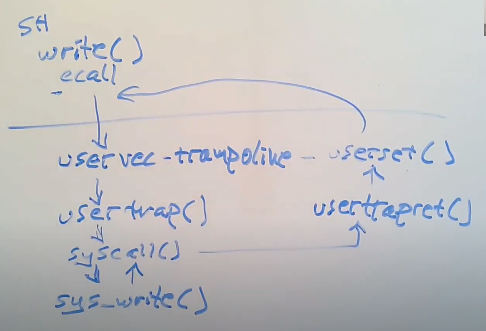

番外篇，探究通过 shell 运行命令时，系统调用到底是个什么流程。
用户层是如何进行系统调用的
以 sleep.c 为例，在 lab0 中我们知道要修改 Makefile 中的
UPROGS 变量，并且 user/user.h 中也为我们提供了
sleep() 的函数声明，但有一件事一直让我们感到疑惑，只不过
lab0 中并没有影响，那就是 sleep() 的定义在哪里？
事实上，Makefile 在构建时，会首先调用
user/usys.pl 脚本文件，其作用是生成一个汇编语言文件
usys.S，这个文件会被解释成
usys.o，最后再和其它 *.o
文件一起链接成内核文件。那么这个脚本具体做了什么事呢？根据阅读我们发现，该文件就是利用
entry() 将用户层的各个函数注册成汇编语言，比如
entry("sleep") 会被注册为：
1 | sleep: |
user.h中的所有函数都在usys.pl中得到注册，所以它们的实现形式都是一样的。
易得，调用用户层的 sleep() 时，会将
SYS_sleep 加载到寄存器 a7 中，然后调用 ecall
指令进入内核，最后通过 ret 返回用户态。
那么这里有个疑问：这个 SYS_sleep 是个什么东西？在
kernel/syscall.c 中有个叫 syscalls[]
的数组，这就是系统调用表，记载了系统调用号 SYS_xxx
到系统调用函数指针 sys_xxx 的映射，那么
SYS_sleep 对应的就是系统调用 sys_sleep
了。
这些
SYS_xxx的值都在kernel/syscall.h中定义。
ecall 与 uservec
ecall 实际上是一条 CPU 指令，它只做三件事情：
- 切换用户态到内核态；
- 保存用户态程序计数器 PC 到寄存器 SEPC；
- 将 PC 设置成寄存器 STVEC 的值，从而跳转到寄存器 STVEC
中指向的指令，也就是
uservec；
那么 uservec 做了什么事呢？
1 | uservec: |
最开始，地址 TRAPFRAME 的值记录在寄存器 SSCRATCH 中，而
trapframe 用于保存所有的 32 个用户寄存器值，而寄存器 a0
存放了第一个参数。uservec
首先交换这两个寄存器的值，这样 a0 就指向 trapframe
了，然后再将所有寄存器依次写入页中。当然，原本的 a0，也就是现在的
SSCRATCH，也需要被保存。
之所以交换，是因为诸如
sd ra 40(a0)这些指令的操作数必须位于用户寄存器，而原本的 32 个用户寄存器都被各自的数据占用，没法存TRAPFRAME，于是就用 SSCRATCH，这个寄存器的作用就是“保存其他寄存器的值”。只要将TRAPFRAME存入其中，通过交换，就可以让TRAPFRAME放到用户寄存器了，从而能够根据 a0 访存，将用户寄存器保存到内存中。当然，别忘了后面还要换回来。
1 | # restore kernel stack pointer from p->trapframe->kernel_sp |
一些内核数据保存在 trapframe 的前面几个变量中，这里将这些变量加载到寄存器中，方便使用。之后将 t1 与 SATP 交换，并清空页表缓存，我们就正式切换到了内核页表。又因为 trampoline 在用户态和内核态都处于同一个虚拟地址，并且映射到同一个物理地址，所以执行不会报错。
原本 SATP 内的用户页表指针不用保存，因为它可以通过
MAKE_SATP(p->pagetable)写回。那么，叫 trampoline page 的原因就很好理解了——某种程度在它上面“弹跳”了一下，然后从用户空间走到了内核空间。
1 | # a0 is no longer valid, since the kernel page |
最后就是根据 t0 和内核页表，获取 usertrap()
函数物理地址，跳转过去并执行了。
usertrap() 做了什么
1 | void |
首先，检查 SSTATUS 的 SPP 位。该位指明了 CPU 之前的权限，如果为 0，则说明是从用户态来的，那检查通过。
1 | // send interrupts and exceptions to kerneltrap(), |
通过 w_stvec() 将 kernelvec 写入 STVEC
中。由于已经处于内核态，如果在这里触发中断/异常就转到
kernelvec 去执行。
1 | struct proc *p = myproc(); |
接着，它获取当前进程 p，并将 SEPC 的值保存在 p->trapframe 的
epc 字段中，这是为了防止切换进程时 SEPC 被覆写。
当前进程的获取需要通过当前 CPU。事实上我们上面已经把 hartid 保存在 tp 中了，这里只需读取编号并从一个叫
cpus的表中获取即可，每个struct cpu内都有一个指针来指向当前进程。
1 | if(r_scause() == 8){ |
（快结束了！）它检查 SCAUSE 寄存器。在 RISC-V
中，一旦出现中断或异常，硬件就会自动设置该寄存器，如果是系统调用，那么会将其设置为
8。 - 如果检查发现这是一个系统调用，就将 trapframe
中保存的用户 PC
增加一个指令字长，这是为了返回时可以直接从系统调用的下一条指令继续执行，然后通过
intr_on() 开中断，最后调用 syscall()
执行系统调用； - 如果是来自设备的中断，并且还是时钟中断，就让出 CPU； -
如果啥也不是，说明出现了某些错误，需要将该进程杀死；
1 | usertrapret(); |
最后，调用 usertrapret()
返回用户态；我们需要关注的就是这个 syscall() 函数，它取出
trapframe 下 a7 的值……这个值好熟悉，原来就是之前我们放入的
SYS_xxx。读取这个值后，从系统调用表中找到相应的系统调用函数指针，通过读取
trapframe 中的寄存器获取参数，就可以做事情了。
usertrapret() 做了什么
usertrapret()
做了一些，为了返回用户态，软件层面要做的工作。嗯，其实就是恢复用户态数据到各个寄存器里。
先回想一下哪些数据因为执行 usertrap()
而被保存或覆写了……用户程序计数器 PC、32 个用户寄存器、SATP 寄存器、STVEC
寄存器、SSCRATCH
寄存器……嗯好像就这些，那接下来就需要将原来用户态的数据写回了。
1 | void |
首先，关闭中断。这是因为接下来要重置
STVEC，而我们仍处于内核态，一旦发生中断/异常，可能会因为
STVEC 的重置而进入错误的处理程序。
1 | // send syscalls, interrupts, and exceptions to trampoline.S |
接着，写回 STVEC。这是因为我们之前将其设为了
kernelvec，现在要返回用户态了，必须切回
uservec。
1 | // set up trapframe values that uservec will need when |
与此同时，更新 trapframe 的前 5 个字段。其中 kernel_satp
与 kernel_hartid 分别从 satp 与
tp 中读取，而 kernel_sp 被设置为
kstack + PGSIZE 是因为栈大小为一个
PGSIZE，kernel_trap 则是直接被设置为
usertrap 的函数地址。
1 | // set up the registers that trampoline.S's sret will use |
还需要设置一些 userret 会用到的寄存器，将 SSTATUS
寄存器的 SPP 位与 SPIE
位——因为要回去了，同时也以便下次能够顺利在用户层执行中断；将 trapframe
中的 epc 字段写回 SEPC，即恢复用户程序计数器；调用
MAKE_SATP 生成一个参数；
1 | // jump to trampoline.S at the top of memory, which |
该参数和 TRAPFRAME 一起传给 userret
并执行，相当于把 TRAPFRAME 写入了 a0，把新的 SATP
值写入了 a1；
ret实际调用的也是kernel/trap.c中的usertrapret()函数，做一些用户空间的恢复工作。当然有些事情得硬件处理，即执行名为userret的汇编函数（位于trampoline.S）。
探索 userret
usertrapret()
还有一些无法在软件层面做的事，这些工作统统由 userret
负责。
1 | .globl userret |
第一步是切换到用户页表。上面已经讲过，把参数传给 userret
时，新的 SATP 值在 a1 里，那就是要交换 a1 和
SATP。当然别忘了清楚页表缓存。
1 | # restore all but a0 from TRAPFRAME |
接下来，复原所有 32 个用户寄存器。a0 已经在传参时被设为了 trapframe，所以直接用就行。
1 | # put the saved user a0 in sscratch, so we |
而 SSCRATCH 在之前由于交换，放的值是 user
a0，也就是系统调用传入的第一个实参（见 uservec），并且被保存到了 trapframe->a0
中。尽管 trapframe->a0
在系统调用过程中变成了系统调用函数返回值，但无论如何，现在需要进行逆操作了——先从
trapframe->a0 中将返回值 载入 SSCRATCH，再和实际寄存器 a0
进行交换。于是乎，现在寄存器 a0 和 SSCRATCH
成为了我们想要的模样，前者存返回值，后者存 TRAPFRAME。之后
TRAPFRAME 会一直保存在SSCRATCH中，直到用户程序执行了另一次
trap。
1 | # return to user mode and user pc. |
最后，执行 sret，程序会切换回用户态，寄存器 SEPC
的数值会被拷贝到 PC，并且重新打开中断。因为同一进程的用户 PC 被记录到了
epc 中，直到 usertrapret() 才被写回
SEPC，所以不用担心被修改。
最后总结

总结起来就是，对于任何一个用户层中允许调用的内核函数
func()，首先要在 user/user.h 中声明，还得在
user/usys.pl 中注册，在 kernel/syscall.h
定义新的系统调用号 SYS_func，以及在
kernel/syscall.c 的系统调用表中注册新的条目
SYS_func => sys_func()。当然不能忘了修改
Makefile 的 UPROGS 变量。
当调用 func() 时，会将 SYS_func 载入
a7，然后调用 ecall 指令，进入到 usertrap()
函数中执行 syscall()，取出 a7
的系统调用号，查表得到系统调用 sys_func()
并执行，将返回值存到 a0 寄存器中，最后调用 sret
指令返回。这就是完整流程。